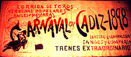

Ver en directo
Ver en directo
Historia del Carnaval de Cádiz
Sin embargo, parece ser que el Carnaval de Cádiz, como la mayor parte de las celebraciones del mismo tipo en Europa, es un hijo, aunque sea pródigo, del cristianismo;[cita requerida] mejor dicho, sin la idea de la Cuaresma no existiría en la forma en que ha existido desde fechas muy antiguas de la Edad Media Europea. Se lo relaciona también con los ritmos del tiempo, con la percepción cualitativa del tiempo. El cristianismo establece «un orden pasional del tiempo», en el que los momentos de alegría y tristeza se alternan cronológicamente, según sea tiempo de prohibiciones o tolerancias, asimilados por el cristianismo. El Carnaval es una consecuencia de la concepción simple del tiempo que adopta el cristianismo. Una concepción ajustada a los ciclos vitales y de las cosechas.

Su principal significación es que autoriza la satisfacción de todos los apetitos que la moral cristiana, por medio de la Cuaresma, refrena acto seguido. Pero al dejarlos expansionarse durante un periodo más o menos largo, la moral cristiana reconoce también los derechos de la carne, la carnalidad. El Carnaval encuentra así, además de su significación social y psicológica, su función equilibradora en todos los aspectos. Y todo pese a que en 1523, Carlos I había prohibido totalmente las máscaras.
Volver a la página de Inicio